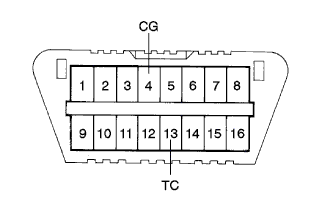

|  |
Use SST to short circuit between 13 (TC) ← → 4 (CG) of DLC3.
- SST
- 09843-18040
- ■ Attention ■
- Never make a short circuit position because it causes a failure.
Turn on the ignition switch.
Read the diagnostic cord (check engine warnin gland lamp number of flashing).

- □ Participation □
- In normal, 0.26 seconds lit and 0.26 seconds turn off.
- If the diag code is one, output the same code at 4.5 seconds, and to output multiple code, output a different code every 2.5 seconds.In one round, it will be output again at 4.5 seconds.
- If two or more code numbers are output, display them in order of small code number.
Turn off the ignition switch.
Open between 13 (TC) ← → 4 (CG) of DLC3.